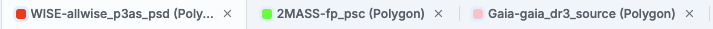
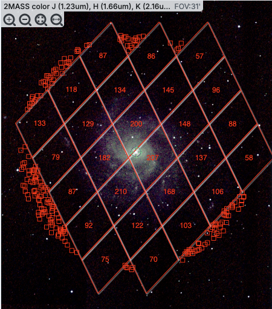
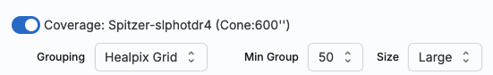
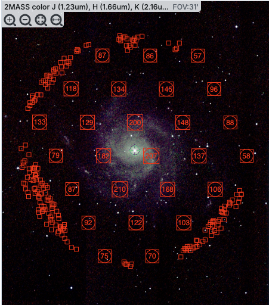
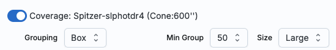
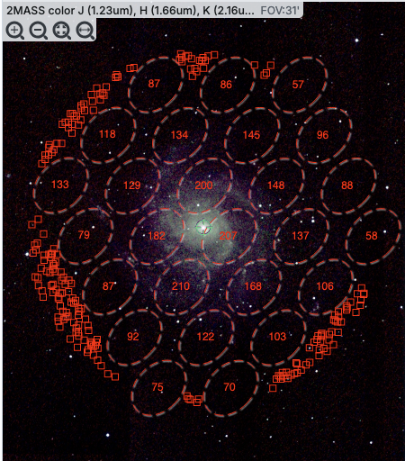
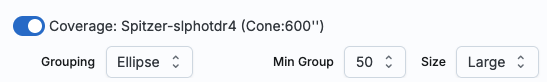
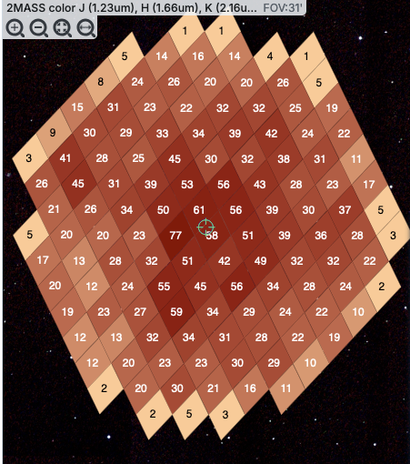
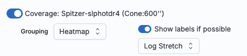
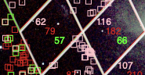

Firefly: Catalogs
Catalogs are a special case of tables; the
basic functionality of tables is covered in the Tables section. You can load a wide variety of
catalogs to load for overlaying on your visualized data. If you don't have an image loaded, the tool will pick a "coverage
image" for you and overlay the catalog on that image. It will also make a plot for you, which you can change.
Contents of page/chapter:
+Introduction
+IRSA Catalogs -- Searching for catalogs from IRSA
+Interacting with Catalogs
+Hierarchical Catalog Display
+Details Tab -- More information about the columns
There are several different ways to get catalogs into Firefly.
This chapter focuses on IRSA catalogs.
When you click on the "Catalogs" tab
at the top of the Firefly window, you are dropped into an IRSA
Catalogs search, which is what we describe here. There are other kinds of searches you can also do
that will load catalogs (or other tables) into the tool.
IRSA Catalogs --
Searching for catalogs at IRSA

The upper left quadrant of this window is where you specify which
catalog you want to search. To change catalogs, first select the
"project" under which they are housed at IRSA, such as 2MASS, IRAS,
WISE, MSX, etc. The available choices underneath that change
according to the project you have selected. A short description is
provided for each of the catalogs, with links for more information
(including definitions of the sometimes cryptic column names); an
example is here:

The upper right quadrant of this window is where you specify the
target (the position is sometimes pre-filled with its best guess as to
what you want) and the search method (cone, elliptical, box, polygon,
multi-object, all-sky), and the parameters that go with that search
method (e.g., the radius of the cone). The parameters for each of
these searches change dynamically as you select search options, as
follows:
- Caution:
- Pick your units from the drop-down
first, and then enter a number; if you enter a number and then select
from the drop-down, it will convert your number from the old units to
the new units. There are both upper and lower limits to your search
radius; it will tell you if you request something too big or too
small. Note that these limits are catalog-dependent.
- Cone search:
-
You can put in a position, but sometimes it attempts to guess a
position, based on prior searches. You specify the cone radius; the
default is 10 arcsec.
- Elliptical search:
-

You can put in a position, but sometimes it attempts to guess a
position, based on prior searches. You specify the search ellipse's
semi-major axis, position ratio, and axial ratio. Defaults are as
shown.
- Box search:
-

You can put in a position, but sometimes it attempts to guess a
position, based on prior searches. You specify the box's length on a
side; default is as shown.
- Polygon search:
-

For this, note that it no longer has a single target location. It will
sometimes try to pre-fill the vertices of the position it thinks you want, based on
prior searches. If you have images loaded, it will give you choices
based on the current image -- you can select whether you want
the catalog request to match the entire area of the image you have
selected ("image"), or just the portion of the image you can see in
the current view ("visible"), or your own ("custom") area. (However,
note that if you have selected a HiPS image before searching, you are
limited to a maximum of 5 degrees.) The list of
vertices in the coordinates box are in decimal RA and Dec in degrees.
You must enter at least 3 and at most 15 vertices, separated by a
comma. Note that, for overlaying catalogs on HiPS images, you cannot
select "image", because HiPS images are generally very, very large, so
this would result in too many points being returned. There is a
maximum of 5 degrees imposed on catalog searches to match HiPS
images.
If you select a
rectangular region of your image and then select a polygon
catalog search, you will have a fourth radio button above, "selection",
which matches the corners of your selected image region.
If you select the "bullseye" icon on the right ( ), you get a pop-up with
a way to interactively select your target; this works just like this interactive target
refinement (go there for more details) :
), you get a pop-up with
a way to interactively select your target; this works just like this interactive target
refinement (go there for more details) :
- Multi-Object search:
-
For a multi-object search, it can't guess what position you want.
You need to upload a file (from your disk or the IRSA Workspace  ) in IPAC table format , which is a varietal of plain text. (IRSA has a table validator which may be helpful.) Note that you also have to
specify the radius over which to search for each of the targets in
your list.
) in IPAC table format , which is a varietal of plain text. (IRSA has a table validator which may be helpful.) Note that you also have to
specify the radius over which to search for each of the targets in
your list.
When you do a multi-position search on catalogs, three new columns are
added to the catalog as it is returned to you. These columns are :
- cntr_01 - the target position you requested
- dist_x - the distance between the target position you requested
and the object it found
- pang_x - the position angle between the target position you requested
and the object it found
These additional columns can help you assess if the target(s) it found is
the target that should be matched to the position you requested.
- All-sky search:
-

Because this is an all-sky search, it does not have a single target
entry box. In order to constrain this search, you need to impose
constraints on the bottom of the screen (see below).
The bottom of this window allows you to set restrictions on specific
columns. It gives you a list of all the available column names in the
corresponding catalog. (Most catalogs have identical "standard" and
"long form" selections, but some have more columns available in "long
form".) From here, you can choose what to display (tickboxes on the
left), and filter what is returned ("constraints" column). For
example, only return objects with values in column y that are greater
than x. If you add more than one restriction, they are combined
logically using an "AND" operators; be careful, because you can thus
restrict data such that none of the catalog meets your criteria.
Click on "Search" to initiate the search. It will load the catalog
into a tab of its own. The objects will also be overlaid on any images
you have loaded, and a default x-y plot will be shown. (For more on the
x-y plots, see Plots section.) All of these
representations are interlinked -- clicking on a row in the table
shows it on the image and in the plot, and clicking on an object in
the image shows it in the table and in the plot, and clicking on an
object in the plot shows it in the table and on the image.
To close the catalog search window without searching for a catalog,
click on "Cancel".
⚠ Tips and Troubleshooting
- If the catalog search is successful quickly, it will promptly return
the results in a tab of its own.
- The search may take a long time to return, especially
if you have asked for a large catalog, and you may think that nothing
has happened, but be patient and eventually it will
return a tab.
- Use large search radii with caution! Be sure you understand how many
sources you are likely to retrieve. Searches that retrieve more rows
will take longer. Searches that retrieve tens of thousands of rows
will take quite a while.
- If you want to impose additional constraints on the catalog during
your initial search, you can do so in the lower half of the screen
(e.g., SNR > n in some band, or an SQL command), you can place
constraints at this point. However, be advised that it is easy to
combine constraints such that no sources are retrieved!
- If you overlay a large catalog, large enough that the plot is a binned heatmap, the entire
source list is NOT overlaid, even if you zoom in a lot. The
way to work within these constraints is to impose a filter on the
catalog to get it below the threshold for a regular plot -- weed out
lower SNR sources, or filter based on RA/Dec, etc. Then all the
individual sources will be shown.
- If you overlay a large catalog, then turn around and save a regions file from
the catalog overlay, then unusual things can happen. If the plot
that results from the catalog is small enough to show individual
points in the plot, then all of the overlays will be saved to the
regions file. BUT if you have a plot with enough
points that it is a binned heatmap, the greatly abbreviated
("decimated") source list overlay will be saved, NOT
the entire catalog!
- If you have "pan by table row" turned on (see Visualization chapter),
then it may be disconcerting to have the images "jump" right after the
catalog loads. It is centering the selected catalog object (the first
one upon catalog loading) in the viewer. If you don't like this, turn
off "pan by table row".
- By default, it may show you fewer columns than are available in
the full catalog. By selecting "long form" (above the list of
columns), you can access the full range of available columns. In some
cases, there are literally hundreds of columns that you can access!
- If you start searching from a HiPS image, you are limited to a 5
degree search radius.
The search results are then shown in a Firefly
table and you can interact with it.
When you load a catalog, the tool may create a table, a plot, and/or,
if your catalog has position information (e.g., RA and Dec), it
overlays the catalog on an image. Tables, plots, and overlays on
images are all interlinked and interactive.
Catalogs are a special case of tables; the
basic functionality of tables is covered in the Tables section. You can sort and filter the
table.
Plots are also covered in a different
section. You can make scatter plots, heat maps, and histograms. You
can plot columns from your catalog, including simple mathematical
manipulations of catalog columns.
If the catalog has positions included, the catalog will also be
overlaid on the loaded image(s). The Visualization section includes
information about that. Each catalog that you load is overlaid on the
image using different, customizable symbols and colors.
When you have catalogs loaded into the tool, the header of the
catalogs has the name of the catalog and a color swatch:

This color swatch corresponds to the symbol color that is used in the
image overlays. You can change the color by clicking on the color
swatch in the header, or by navigating to the layers in the image
pane. See the color picker
section of the visualization chapter for more information.
⚠ Tips and Troubleshooting
- Large catalogs will be displayed hierarchically! See next section.
- If you save the overlays from an image as a regions file, you may
not get your complete catalog, especially if it is a large catalog
(see next section!). However, you can save the full contents
of a single catalog as a regions file using the "save" (diskette) icon
in the table toolbar, instead of the image toobar.
If one has a large catalog loaded into the tool overlaid on top of
lots of images the possibility exists that the computer or the network
could be overwhelmed trying to render all the points on all the
images. Historically we dealt with this by "thinning out" the catalog
and not showing all the points. However, there is a better solution,
which is now employed here!
For catalogs below about 1000 points, the tool will show the
individual points on the image.
For catalogs above that threshold, the tool will bin up the catalogs
based on HEALPix pixels (see HiPS section
here for more links). In summary, the sky is broken up into
sections, and the tool will show symbols with a number indicating the
number of sources in that region. Then, when you zoom in, it will
dynamically adapt to show you smaller and smaller cells until it shows
you all the individual sources.
From the layers icon ( see visualization chapter), you can
bring up many display options. Below are examples of what is displayed,
the options seen in the layers, and additional options. The same
catalog and zoom level and minimum group size are used for each view.
The "Min Group" option here is 50, so if there are cells with fewer
than 50 sources, then the individual sources are shown, and if there
are more than 50 sources, then the cell is shown with a number inside
corresponding to the number of sources from the catalog. (See below for
additional information.)
|  |

In this view, the 'cells' used are the cells explicitly associated
with the HEALPix grid, so the size of the cells is very clear. In the
top row here, three of the diamond-shaped cells across the top have
fewer than 50 sources (so they do not have cell boundaries and the
individual sources are shown), then the next row of diamond-shaped
cells have 87, 86, and 57 sources respectively.
|
|  |

In this view, the 'cells' are shown by circles enclosed within boxes.
The locations and cell sizes are the same as in the prior screenshot,
but the boundaries between tiles may be less obvious to new users. |
|  |

In this view, the 'cells' are shown by ellipses shown with dashed
lines. The locations and cell sizes are the same as in the prior
screenshot, but the boundaries between tiles may be less obvious to
new users. It may be more obvious, though, that these are
representations of groups of points. |
|  |

Finally, in this view, the 'cells' are again shown as the HEALPix
tiles, but in this case the color of the cells corresponds to the
number of sources in the cell. You can choose "Linear", "Linear
Compressed", or "Log Stretch" to assign the colors, and you can change
the color range by changing the color using the color picker in the layers
pop-up, from which you can also change the transparency. This
approach makes it more visually clear how many sources are in each
cell, but makes it harder to see the background image. Even though
you can change the transparency of this overlay to reveal more of the
background, it still can make seeing the image challenging in some
cases. |
⚠ Tips and Troubleshooting
- For all of these renditions, when you zoom in close enough, it
will dynamically adapt and show you individual sources when you zoom
in. (That is, it no longer decimates the overlaid catalog, which is
what it used to do.)
- For all of these renditions, if you click on a cell, it will
display all of the sources in the cell. You can click on many cells in
a row and it will continue to display all the sources it can until it
reaches the point at which it thinks performance will suffer, at which
point it will turn some of the points back into cells.
- If you want to have more of your catalog shown as individual
sources, pick a smaller "min group" number.
- If you have more than one catalog loaded, the
numbers within the cells (and in some cases the cell indicators
themselves) will be offset slightly so that you can see them.

- If you have a catalog that includes sources from all over the sky,
it very well may just give you box groupings, and may not allow you to
change that view until you zoom in.
- If you have cells where only 1/4 of a cell is populated, it
automatically renders a smaller cell, so if you have a sparsely
populated but still large catalog, the size of the display will always
be "small" size cells.
- If you are looking at many footprints from, say, a complex, and
long ObsCore search, if you have more than 30,000 footprints, it may
not be able to render all of the outlines of all of those images. It
may render the centers of all of those images as if it were a catalog,
in which case you will encounter these kinds of hierarchical catalog
display options.
If you load a catalog from IRSA, you will likely have an additional
tab on the right hand side, under the plot, called "Details." This
additional tab is sometimes called a "property sheet." This tab is,
itself, another Firefly table, and consists
of each of the columns of the retrieved catalog with additional
information about each field where available. (Not every catalog may
have this information available.) This information can be used to
learn more about each of the columns in retrieved. For additional
information, please consult the full documentation that accompanies
the catalog.
⚠ Tips and Troubleshooting
- The property sheet is a more expanded, vertical view of the
information shown in a row of a catalog, along with documentation of
the catalog columns. Because you can sort/filter the data in the
property sheet, you can restrict what values are shown. Those filters
are respected as you page through a catalog. So, for example (see
screenshot below), you can pull up the property sheet, filter it down
to only show the profile-fitted magnitudes and errors by filtering on
"mpro", and then step through the values in the catalog and inspecting
the brightnesses as shown in the property sheet for each source.
- When changing rows in the main table, the property sheet/details
tab scrolls to preserve the visibility of whatever row in the details
tab is highlighted. If you scroll down in the property sheet
without changing the highlight, when you change rows in the
main table, because the first row in any table is always highlighted
by default, the property sheet will scroll back to the top.